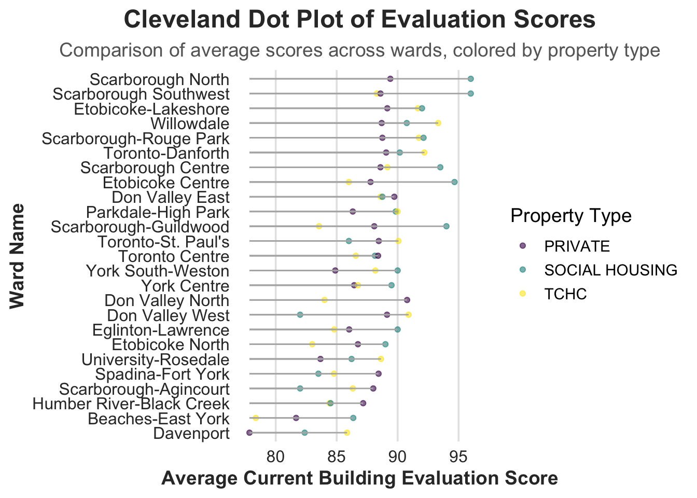

The following objects are masked from 'package:stats':
filter, lag
The following objects are masked from 'package:base':
intersect, setdiff, setequal, union
Code
library(tidyr)library(viridis)
Loading required package: viridisLite
Code
library(vcd)
Loading required package: grid
Code
library(grid)library(ggalluvial)library(GGally)
Registered S3 method overwritten by 'GGally':
method from
+.gg ggplot2
Code
library(ggridges)building <-read_csv("Apartment Building Evaluations 2023 - current.csv")
Warning: One or more parsing issues, call `problems()` on your data frame for details,
e.g.:
dat <- vroom(...)
problems(dat)
Rows: 3571 Columns: 71
── Column specification ────────────────────────────────────────────────────────
Delimiter: ","
chr (39): PROPERTY TYPE, WARD, WARDNAME, SITE ADDRESS, EXTERIOR GROUNDS, FE...
dbl (31): _id, RSN, YEAR REGISTERED, YEAR BUILT, YEAR EVALUATED, CONFIRMED ...
date (1): EVALUATION COMPLETED ON
ℹ Use `spec()` to retrieve the full column specification for this data.
ℹ Specify the column types or set `show_col_types = FALSE` to quiet this message.
Warning in mean.default(sort(x, partial = half + 0L:1L)[half + 0L:1L]):
argument is not numeric or logical: returning NA
Warning in mean.default(sort(x, partial = half + 0L:1L)[half + 0L:1L]):
argument is not numeric or logical: returning NA
Warning in mean.default(sort(x, partial = half + 0L:1L)[half + 0L:1L]):
argument is not numeric or logical: returning NA
Warning in mean.default(sort(x, partial = half + 0L:1L)[half + 0L:1L]):
argument is not numeric or logical: returning NA
Warning in mean.default(sort(x, partial = half + 0L:1L)[half + 0L:1L]):
argument is not numeric or logical: returning NA
Warning in mean.default(sort(x, partial = half + 0L:1L)[half + 0L:1L]):
argument is not numeric or logical: returning NA
Code
# For 'year_built' and 'year_registered', impute with medianbuilding$`YEAR BUILT`[is.na(building$`YEAR BUILT`)] <-median(building$`YEAR BUILT`, na.rm =TRUE)building$`YEAR REGISTERED`[is.na(building$`YEAR REGISTERED`)] <-median(building$`YEAR REGISTERED`, na.rm =TRUE)# For 'x' and 'y', impute with meanbuilding$X[is.na(building$X)] <-mean(building$X, na.rm =TRUE)building$Y[is.na(building$Y)] <-mean(building$Y, na.rm =TRUE)# Exclude 'logitude' and 'latitude' columnsbuilding <- building[, !colnames(building) %in%c("logitude", "latitude")]# Rename 'PROPRTTY TYPE' for future plotbuilding <- building |>rename(PROPERTYTYPE =`PROPERTY TYPE`)
3.1 Investigate housing quality with respect to region in Toronto
Code
ggplot(building, aes(x =`CURRENT BUILDING EVAL SCORE`)) +geom_histogram(aes(y = ..density..),binwidth =3,fill ="skyblue",color ="white",alpha =0.8 ) +geom_density(color ="darkred",size =1.2,linetype ="dashed" ) +labs(title ="Distribution of Current Building Evaluation Scores",subtitle ="Histogram with density overlay",x ="Current Condo Evaluation Scores",y ="Density" ) +theme_minimal() +theme(plot.title =element_text(size =16, face ="bold", hjust =0.5),plot.subtitle =element_text(size =12, face ="italic", hjust =0.5),axis.text =element_text(size =10),axis.title =element_text(size =12, face ="bold") )
Warning: Using `size` aesthetic for lines was deprecated in ggplot2 3.4.0.
ℹ Please use `linewidth` instead.
Warning: The dot-dot notation (`..density..`) was deprecated in ggplot2 3.4.0.
ℹ Please use `after_stat(density)` instead.
The distribution appears to be left-skewed, with the majority of condo evaluation scores concentrated on the higher end (around 75–100). This indicates that most buildings in Toronto have relatively high evaluation scores, with fewer buildings falling in the lower quality range.
Code
cleveland_data <- building |>filter(!is.na(`CURRENT BUILDING EVAL SCORE`), !is.na(WARDNAME), !is.na(PROPERTYTYPE))ward_scores <- cleveland_data |>group_by(WARDNAME, PROPERTYTYPE) |>summarise(AverageScore =mean(`CURRENT BUILDING EVAL SCORE`, na.rm =TRUE)) |>arrange(AverageScore)
`summarise()` has grouped output by 'WARDNAME'. You can override using the
`.groups` argument.
Code
ggplot(ward_scores, aes(x = AverageScore, y =reorder(WARDNAME, AverageScore), color = PROPERTYTYPE)) +geom_point(size =3, alpha =0.6) +geom_segment(aes(x =min(AverageScore), xend = AverageScore, y =reorder(WARDNAME, AverageScore), yend =reorder(WARDNAME, AverageScore)),color ="grey70", size =0.5) +labs(title ="Cleveland Dot Plot of Evaluation Scores",subtitle ="Comparison of average scores across wards, colored by property type",x ="Average Current Building Evaluation Score",y ="Ward Name",color ="Property Type" ) +theme_minimal(base_size =14) +theme(plot.title =element_text(hjust =0.5, face ="bold", size =18, color ="#333333"),plot.subtitle =element_text(hjust =0.5, size =14, color ="#666666"),axis.text.x =element_text(size =12, color ="#333333"),axis.text.y =element_text(size =12, color ="#333333"),axis.title.x =element_text(size =14, face ="bold", color ="#333333"),axis.title.y =element_text(size =14, face ="bold", color ="#333333"),panel.grid.major.x =element_line(color ="grey90"),panel.grid.minor.x =element_blank(),panel.grid.major.y =element_blank() ) +scale_color_viridis_d()
Based on this Cleveland dot plot, the scores vary slightly across wards, but overall, private properties consistently have higher average scores. This suggests that the quality of housing may be influenced by property type, with private housing generally outperforming the others.
Code
filtered_data <- building |>filter(!is.na(WARDNAME) &!is.na(`CURRENT BUILDING EVAL SCORE`))ggplot(data = filtered_data, aes(x =`CURRENT BUILDING EVAL SCORE`,y = WARDNAME,fill = WARDNAME)) +geom_density_ridges(scale =2, alpha =0.8) +scale_fill_viridis_d(option ="plasma") +labs(title ="Ridgeline Plot of Current Eval Scores",x ="Current Building Evaluation Score",y ="Ward Name",fill ="Ward" ) +theme_minimal(base_size =16) +theme(plot.title =element_text(hjust =0.5, size =20, face ="bold"),axis.text.x =element_text(size =12, angle =0),axis.text.y =element_text(size =12),axis.title.x =element_text(size =14, face ="bold"),axis.title.y =element_text(size =14, face ="bold"),legend.position ="none" )
Picking joint bandwidth of 2.52

This ridgeline plot shows a different ranking of evaluation scores based on ward than the previous Cleveland dot plot, as the former one used raw scores whereas the latter one used mean scores. Some wards show a wider spread of scores (e.g., Scarborough Guildwood, Davenport), suggesting greater variability in housing quality within those areas. Wards like Willowdale and Scarborough North appear to have relatively higher median evaluation scores, as seen by the placement of their peaks.
3.2 Explore trends in property types across time in Toronto
Code
ggplot(building, aes(x =`YEAR BUILT`, y =`CURRENT BUILDING EVAL SCORE`)) +stat_bin2d(bins =50, aes(fill = ..count..) ) +scale_fill_gradientn(colors = viridis::turbo(10), name ="Building Count" ) +labs(title ="Building Evaluation Scores by Year Built",subtitle ="Density of Buildings Evaluated Across Different Years",x ="Year Built",y ="Building Evaluation Score" ) +theme_minimal(base_size =16) +theme(plot.title =element_text(size =22, face ="bold", hjust =0.5, color ="#333333" ),plot.subtitle =element_text(size =16, hjust =0.5, color ="#555555" ),axis.title.x =element_text(size =14, face ="bold"),axis.title.y =element_text(size =14, face ="bold"),axis.text =element_text(size =12, color ="#333333"),legend.title =element_text(size =12, face ="bold"),legend.text =element_text(size =10),panel.grid.major =element_line(color ="gray85", size =0.5),panel.grid.minor =element_blank() )
Warning: The `size` argument of `element_line()` is deprecated as of ggplot2 3.4.0.
ℹ Please use the `linewidth` argument instead.
The heatmap shows that most buildings are built a bit after 1950 as the red center is positioned at around 1960. Overall, the majority of buildings were constructed between 1950 and 2000, whereas buildings constructed before 1900 are sparse. There are still a few buildings plotted after 2000, possibly because of limited data availability or fewer constructions.
`summarise()` has grouped output by 'YearGroup'. You can override using the
`.groups` argument.
Code
ggplot(data = allu_data,aes(x = YearGroup, stratum = PROPERTYTYPE, alluvium = PROPERTYTYPE, y = Count)) +geom_flow(aes(fill = PROPERTYTYPE), curve_type ="sigmoid", alpha =0.8) +geom_stratum(width =1/8, fill ="grey", color ="black") +geom_text(stat ="stratum", aes(label =after_stat(stratum)), size =2, color ="black", vjust =0.5) +scale_fill_viridis_d(option ="plasma", name ="Property Type") +labs(x ="Year Built Group",y ="Count of Properties",title ="Alluvial Diagram of Property Types by Year Built Group" ) +theme_minimal(base_size =14) +theme(plot.title =element_text(hjust =0.5, size =16, face ="bold"),axis.text.x =element_text(size =12, angle =30, hjust =1), axis.text.y =element_text(size =12),axis.title =element_text(size =14),legend.position ="right",legend.title =element_text(size =12),legend.text =element_text(size =10))
The alluvial diagram splits the year built into three equal groups, we can observe that across all periods, private properties are the most prevalent property type. But as recent period approaches, the proportions of social housing and TCHC (Toronto Community Housing Corporation) have increased a lot, despite that private housing still dominates.
Code
building <- building |>mutate(old_or_new =ifelse(`YEAR BUILT`>1960, "new", "old"),high_or_low =ifelse(`CURRENT BUILDING EVAL SCORE`>=mean(`CURRENT BUILDING EVAL SCORE`, na.rm =TRUE),"high", "low" ) )mosaic(~ high_or_low + old_or_new + PROPERTYTYPE, data = building,highlighting ="PROPERTYTYPE",highlighting_fill =c("#ADD8E6", "#4682B4", "#00008B"), direction =c("v", "v", "h"), main ="Mosaic Plot of Building Characteristics",sub ="Split by Evaluation Score, Year Built, and Property Type",labeling_args =list(gp_labels =gpar(fontsize =c(10, 8, 6), fontface ="bold"), gp_varnames =gpar(fontsize =10, fontface ="bold", col ="darkblue"), rot_labels =c(0, 0, 45), just_labels =c("center", "center", "center") ),keep_aspect_ratio =FALSE, margins =unit(c(2, 2, 2, 4), "lines") )
The mosaic plot further validates the result from alluvial diagram that private buildings are dominant, whereas its proportion decreases overtime. Thus, the proportion of non-private buildings appears to be higher in the new buildings category compared to the old. As for evaluation scores, older buildings tend to have both high and low evaluation scores, but the overall presence of social housing and TCHC in these buildings is minimal.
3.3 Investigate factors affecting housing quality in Toronto
Code
ggplot(building, aes(x =`YEAR BUILT`, y =`CURRENT BUILDING EVAL SCORE`)) +geom_point(color ="dodgerblue", alpha =0.4, size =2) +geom_smooth(method ="lm", color ="darkred", linetype ="dashed", se =FALSE, size =1) +facet_wrap(~`BUILDING CLEANLINESS`, ncol =2) +labs(title ="Scatterplot: Current Building Evaluation Score vs Year Built",subtitle ="Faceted by Building Cleaniness",x ="Year Built",y ="Current Building Evaluation Score" ) +theme_minimal(base_size =14) +theme(plot.title =element_text(size =16, face ="bold", hjust =0.5, color ="darkblue"), plot.subtitle =element_text(size =12, face ="italic", hjust =0.5, color ="gray40"), strip.text =element_text(size =14, face ="bold", color ="darkgreen"), axis.title =element_text(size =12, face ="bold"),axis.text =element_text(size =10),panel.grid.major =element_line(color ="gray80", linetype ="dotted"), panel.grid.minor =element_blank(), panel.background =element_rect(fill ="white", color ="gray90"), strip.background =element_rect(fill ="lightgray", color ="gray70"), plot.margin =margin(t =10, r =10, b =10, l =10) )
`geom_smooth()` using formula = 'y ~ x'
Across all facets, there seems to be a positive trend where newer buildings generally have higher evaluation scores. Higher cleanliness levels (2 and 3) are associated with higher evaluation scores, regardless of building age, whereas poor cleanliness (level 0) is more common in older buildings, highlighting a potential focus area for improvement in housing quality.